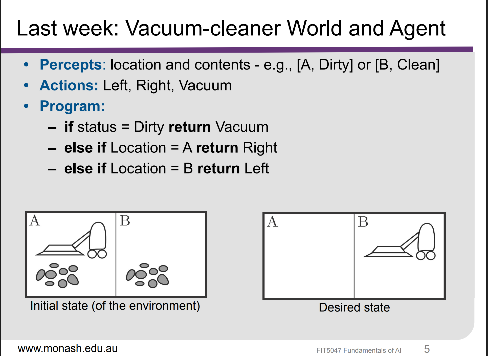
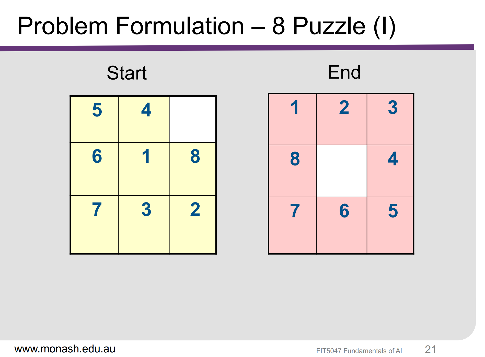

课程简介
- AI基础课，也是核心课
评估总结
- Weekly Quiz：共 6 次，总计 24%
- Assignment 1： 总计 25%
- demonstration： 共3次 总计 51%
课程理解
Week 1
Week 1 我没有听。
Week 2
标题为Solving problems with search algorithms
核心内容为：
- Problem Formulation（问题形式化）： 将现实世界的问题抽象并定义为AI可理解的状态空间与规则
- Control strategies（控制策略）： 按搜索机制划分为两大类：
- Tentative （试探性策略）：按搜索机制划分为两大类：
- Uniformed Search(盲目/无信息搜索)：回溯法（backtracking）、树与图搜索（Tree and Graph search）、深度优先搜索（DFS）、广度优先搜索（BFS）、迭代加深搜索（IDS）、双向搜索（Bidirectional Search）
- Informed Search（启发式搜索）：贪心搜索（Greedy Search）、贪心最佳优先搜索（Greedy best-first search）、A*搜索（A* Search）、IDA*搜索（Iterative Deepening A* Search）
- 不可逆策略（Irrevocable）： 一旦决定不可撤销，多用于局部优化与进化计算
- 启发式算法： 爬山法（Hill climbing）、局部束搜索（Local beam search）、模拟退火（Simulated annealing）、遗传算法（Genetic algorithms）。
- 对抗搜索算法（Adversarial search algorithms）： 主要应用于零和博弈与棋类对抗场景（如象棋、围棋）。
- 核心技术： 最优决策（Optimal decisions）、极大极小算法（Minimax）、$\alpha$-$\beta$ 剪枝（$\alpha$-$\beta$ pruning）。
老师的PPT用Romania作为例子，假设你在Romania的Arad度假。
那么你需要先 Formulate Goal（制定目标），比如说be in Bucharest。然后Formulate Problem（制定问题）： states（状态）：various cities（各种城市），actions（动作）：drive between cities
最后find solution： sequence of cities, e.g., Arad → Sibiu → Rimnicu Vilcea → Bucharest

第一个内容是problem formulation（问题形式化）
问题形式化是指将现实世界的问题抽象并定义为AI可理解的状态空间与规则。 其中包含的决策过程包括：
- which properties of the world matter(哪些世界属性是重要的)
- which actions are possible(哪些动作是可能的)
- how to represent world states and actions(如何表示世界状态和动作)
Abstracting away from unnecessary detail is a key➔ It can drastically reduce the size of the state/search space(去除不必要的细节是关键➔它可以显著减少状态/搜索空间的大小)
Problem formulation: Example
- initial state: Arad
- actions:
Go(sibiu), Go(rimnicu vilcea), Go(bucharest),... - transition model:
result(in(arad),go(zerind)) ➔ in(zerind) - constraint: - nil
- goal test can be:
- explicit, e.g., in(bucharest) -implicit, e.g., checkmate(x) - path cost(additive)
- e.g., sum of distances, number of actions executed - c(s,a,s') is the step cost of taking aciton $a$ at state $s$ to reach state $s'$, assumed to be >= 0

这张幻灯片以人工智能中的经典模型“吸尘器世界”（Vacuum World）为例，解释了如何将现实问题形式化（Problem Formulation）为计算机可处理的标准搜索问题。
核心要素拆解
- 状态（States）： 图中展示了 8 种可能的状态。由吸尘器的位置（左/右）以及左右两个房间是否有灰尘排列组合决定（$2 \times 2 \times 2 = 8$）。
- 操作符/动作（Operators）： 智能体可以执行的 3 种基本动作：向左移动（Left）、向右移动（Right）、吸尘（Suck）。
- 约束条件（Constraints）： 规则限制，例如吸尘器不能离开这两个房间构成的范围（不能越界）。
- 目标测试（Goal Test）： 判断任务是否完成的标准。红框圈出的 状态 7 和状态 8 即为目标状态（左右房间都已清理干净）。
- 路径代价（Path Cost）： 衡量解决问题效率的成本指标，例如每执行一步动作（移动或吸尘）的代价记为 1。
这个图展示了吸尘器世界中所有可能出现的状态（States）。它的核心逻辑是由 3 个二元变量排列组合得出的，总共包含 $2 \times 2 \times 2 = 8$ 种不同情况。
状态计算的三要素
- 吸尘器位置：左边 / 右边（2 种可能）
- 左房间状态：有灰尘 / 无灰尘（2 种可能）
- 右房间状态：有灰尘 / 无灰尘（2 种可能）
8 个状态的具体对应关系
- 状态 1 & 2（最脏状态）：左右两个房间都有灰尘。
- 状态 1：吸尘器在左房间，左房间有灰尘，右房间有灰尘。
- 状态 2：吸尘器在右房间，左房间有灰尘，右房间有灰尘。
- 状态 3 & 4（左房间清洁，右房间有灰尘）：
- 状态 3：吸尘器在左房间，左房间无灰尘，右房间有灰尘。
- 状态 4：吸尘器在右房间，左房间无灰尘，右房间有灰尘。
- 状态 5 & 6（左房间有灰尘，右房间清洁）：
- 状态 5：吸尘器在左房间，左房间有灰尘，右房间无灰尘。
- 状态 6：吸尘器在右房间，左房间有灰尘，右房间无灰尘。
- 状态 7 & 8（最干净状态）：左右两个房间都已清洁。
- 状态 7：吸尘器在左房间，左房间无灰尘，右房间无灰尘。
- 状态 8：吸尘器在右房间，左房间无灰尘，右房间无灰尘。
如何理解它的动态运作
AI 算法的目标就是控制吸尘器通过执行动作（Left 左移、Right 右移、Suck 吸尘），从任意一个初始状态转移到目标状态（7 或 8）:
- 推演示例：如果初始状态是 状态 1（两边都脏，吸尘器在左边）：
- 吸尘器执行 Suck（吸尘）动作 → 转移到 状态 3（左边干净，右边脏，吸尘器仍在左边）
- 吸尘器执行 Right（右移）动作 → 转移到 状态 4（左边干净，右边脏，吸尘器在右边）
- 吸尘器执行 Suck（吸尘）动作 → 转移到 状态 8（两边都干净，吸尘器在右边）

根据上周的PPT，可以看到Agent 主要是基于通过传感器（sensors） 来感知（percept）环境（environment)输入给agent，然后agent基于这些内容对环境（environment)通过执行器（actuators）做出行动 （actions）

这幅图展示的是人工智能中简单问题求解智能体（Simple Problem-Solving Agent）的算法伪代码，用来说明一个基于目标的智能体（Agent）是如何通过“感知-规划-执行” 三部曲来决定每一步动作的
持久状态变量（Persistent Variables）
- state：智能体对当前环境状态的内部认知。
- seq：已经规划好的动作序列（初始为空）。
- goal：智能体当前试图达成的目标。
- problem：结合当前状态和目标所构建的具体问题模型。
算法核心执行步骤
- 更新感知（UPDATE-STATE）：智能体接收外界环境的感知输入 percept，并更新内部状态 state。
- 制定计划（当 seq 为空时）：
- 制定目标（FORMULATE-GOAL）：根据当前状态确定要达成的目标。
- 形式化问题（FORMULATE-PROBLEM）：定义初始状态、动作空间和目标测试。
- 搜索求解（SEARCH）：调用搜索算法（如 A* 搜索、BFS 等）计算出能达成目标的一连串动作序列 seq。若无解则返回空操作。
- 逐步执行：
- 提取序列中的第一个动作 FIRST(seq) 作为本次要执行的操作。
- 将剩余的动作序列 REST(seq) 保存回 seq，供后续步骤依次执行。
- 返回并执行该动作。
这种智能体采用了经典的“先规划再行动（Look-ahead）”机制：在初始阶段或上一个计划完成后，通过搜索算法生成一整套解决路径，随后按步骤依次执行，直到计划耗尽后再重新规划。
Key Concepts（核心概念）
- Basic constituents（基本构成）：由 States（状态）、Goals（目标）、Actions（动作） 与 Constraints（约束） 四大要素组成。
- State space（状态空间）：从 Initial state（初始状态） 出发，通过任意 Action sequence（动作序列） 所能到达的所有状态的全集。
- Path in the state space（状态空间中的路径）：连接一个状态到另一个状态的动作序列。
Representing a Problem（问题的 5 大标准表示法）
- Initial state（初始状态）：智能体求解问题的起点（例如：拼图的初始乱序、导航的起始坐标）。
- Operators (Actions) and transition model（算子/动作与转移模型）：定义了可以执行哪些动作（Actions），以及执行某动作后状态会如何转换（State transition）。
- Constraints（约束条件）：求解过程中必须遵守的限制规则（例如：不能穿越障碍物、资金上限）。
- Goal test（目标测试）：用来检查当前 State 是否已经达到 Goal state（目标状态） 的评估逻辑。
- Path cost function（路径代价函数）：计算整条路径所消耗的总 Cost（如时间、距离或步数），帮助衡量解的优劣。
Definition of Solution（解的定义）

然后提出一个新的问题你应该怎么做呢？从开始的杂乱无绪，到后面的顺时针排序，你因该怎么定义
解决逻辑：
- States：Location of each of the 8 tiles in one of the 9 squares
- Operators：Possible moves of blank tile
- Constrains： A tile cannot move out of bounds
- Goal Test：Have we reached the goal configuration?
- Path Cost：If we want to minimize the number of steps, then cost of 1 per step
Search tree
首先我们可以想象一下，我们要在google上搜索‘如何零基础自学吉他’，你整个查资料、翻网页的过程，其实就是一次标准的 Tree Search（树搜索）
把上网冲浪映射到树搜索的组件上，对应关系如下：
- Initial State（初始状态）：你在搜索引擎输入关键词后，出现的第一个搜索结果页面。
- Frontier（待搜索列表）：你在浏览器顶部开着但还没来得及看的那些标签页（Tabs）。
- Expand（扩展）：你在阅读某个网页时，看到里面有个超链接（比如“吉他选购指南”），点击它并打开了新页面。
- Goal Test（目标检测）：新页面加载出来后，你快速扫一眼，评估“这篇内容有没有把我关心的问题讲清楚？”
- Solution（解）：你最终找到的那篇干货文章，以及你是通过哪几个网页一步步点过来的点击路径。
Tree Search 逐步推演图解
AI 搜索与控制策略分类指南
Classification of Control Strategies in Artificial Intelligence
🧭 分类的两大维度
1. Tentativeness（尝试性 / 可悔棋性）
- Tentative（尝试性的 / 可回溯）： 允许悔棋。记录搜索历史，遇到死胡同可退回重新选择路线。
- Irrevocable（不可撤销的 / 无法悔棋）： 落子无悔。每一步做出后不可撤销，直接迈向下一状态。
2. Informedness（启发性 / 信息指导）
- Informed（启发式 / 有信息）： 有“导航”（启发函数 $h(n)$），能评估距离目标的远近。
- Uninformed（无启发式 / 盲目）： 没有“导航”，仅凭规则盲目探索，不知目标具体方向。
📊 控制策略分类全景对比表
| 组合分类 | 算法特点 | 代表算法 | 通俗比喻 |
|---|---|---|---|
| 无启发式 + 不可撤销 Uninformed + Irrevocable | 不存在有效算法 (--) | 无 |
蒙着眼睛在悬崖边向前走，走错直接掉下去，既没导航又不能回头，无法稳定解决问题。
|
| 无启发式 + 可回溯 Uninformed + Tentative |
盲目搜索（Blind Search） 虽然没有导航指引，但会记录走过的路，发现死胡同就退回来换条路走。 |
BFS（广度优先） DFS（深度优先） DLS（限深） IDS（迭代加深） UCS（一致代价） |
瞎子摸象/走迷宫： 虽然不知道出口在哪，但用绳子绑着自己，撞墙了就沿着绳子退回来走另一条。
|
| 启发式 + 不可撤销 Informed + Irrevocable |
局部搜索（Local Search） 有导航指引，但为了节省内存，不保存历史路线，只不断尝试改善当前状态。容易陷入“局部最优”。 |
Hill Climbing（爬山法） Simulated Annealing（模拟退火） Genetic Algorithms（遗传算法） Local Beam Search |
浓雾中爬山： 你看不见全局，但能感觉哪边坡度更陡（启发信息），就往哪边走。走了一步就回不去了。
|
| 启发式 + 可回溯 Informed + Tentative |
系统性启发式搜索 既有导航指引（优先走看起来最好的路），又维护了一个备选路线列表（Open List），当前路线不行随时切换。 |
Greedy Best-First Search A 算法 A* 算法 |
使用地图导航： GPS 会推荐最优路线（启发），但如果你偏离路线或遇到堵车，导航能重新计算并指引你走备用路线（回溯）。
|
💡 一句话速记口诀
无信息搜索（又称盲目搜索）指算法在探索状态空间时，仅利用问题定义本身的信息（初始状态、动作集、转移模型及目标测试），不借助任何领域相关的启发式估算函数（如距离、评估值等）。
|
广度优先搜索 (BFS - Breadth-First Search)
|
深度优先搜索 (DFS - Depth-First Search)
|
假设分支因子 b = 10，最优解深度 d = 12。 BFS 在第 d 层需在前沿（Frontier）中保存 1012 个节点。假设每个节点数据仅占用 100 字节，则所需内存高达 100 GB！因此，BFS 的核心瓶颈绝非 CPU 耗时，而是内存溢出。
迭代加深搜索（Depth-First Iterative Deepening, IDS / DFID）通过逐步增加深度限制 L (L = 0, 1, 2, ...)，反复运行深度受限搜索（DLS）。
假设分支因子为 b，目标解深度为 d：
- 第 d 层（最底层，节点最多）被生成 1 次；
- 第 d-1 层节点被生成 2 次；... 根节点（仅 1 个）被生成 d 次。
N(IDS) = 5(10) + 4(100) + 3(1000) + 2(10000) + 1(100000) = 123,450 个节点。
单次 BFS 生成节点数为 111,110 个。IDS 只比 BFS 多产生了约 11% 的节点开销！
结论： IDS 完美结合了 BFS 的完备性/最优性 和 DFS 的低内存消耗 O(bd)。
| 搜索策略 | 时间复杂度 | 空间复杂度 | 完备性 (Completeness) | 最优性 (Optimality) |
|---|---|---|---|---|
| BFS (广度优先) | O(bd) | O(bd) (高) | 是 (若 b 有限) | 是 (当步长代价相同时) |
| DFS (深度优先) | O(bm) | O(bm) (极低) | 否 (有限空间且去重时为“是”) | 否 |
| DLS (深度受限) | O(bL) | O(bL) | 否 (当 d > L 时) | 否 |
| IDS (迭代加深) | O(bd) | O(bd) (极低) | 是 | 是 (当步长代价相同时) |
| UCS (一致代价) | O(b1+⌊C*/ε⌋) | O(b1+⌊C*/ε⌋) | 是 (当代价 ≥ ε > 0) | 是 (任意正步长代价) |
传统搜索将状态视为不可拆分的黑盒（Atomic State）；而 CSP 将状态结构化表达为变量与值域的赋值组合，使得算法能够利用局部约束进行针对性剪枝。
- 变量集合 X：X = {X1, X2, ..., Xn}（如地图中的各个行政区域）。
- 值域集合 D：D = {D1, D2, ..., Dn}，限定每个变量可取的离散/连续数值（如颜色 {红, 绿, 蓝}）。
- 约束集合 C：C = {C1, C2, ..., Ck}，指定变量间允许的组合（如 WA ≠ NT）。
回溯搜索是针对 CSP 特化的深度优先搜索（DFS）。由于 CSP 解与变量赋值顺序无关（对 A 赋值再对 B 赋值，与先 B 后 A 等价），搜索树每层仅对单个变量赋值，将分支树从 b! 级降至指数级，并能实现早期剪枝（Early Pruning）。
|
1. MRV (最少剩余值)
Minimum Remaining Values
|
2. LCV (最少约束值)
Least Constraining Value
|
3. Arc Consistency (AC-3)
弧一致性前向推断
|
理解算法的分类维度能够帮助我们在面对实际工业界问题时迅速做出正确的技术选型。
| 分类维度 | 不可撤销算法 (Irrevocable) | 尝试性/可回溯算法 (Tentative) |
|---|---|---|
| 核心机制 | 决策一旦做出立刻执行，不保存历史轨迹，无法回头。 | 在内存中维护搜索树/前沿队列，允许回溯并重新尝试。 |
| 典型代表 | 随机游走（Random Walk）、简单爬山法（Hill Climbing）。 | BFS, DFS, IDS, UCS, A* 算法, 回溯搜索。 |
| 适用场景 | 状态空间极度庞大、环境物理不可逆或对响应时间要求极高。 | 允许在计算机内存中进行虚拟推演的求解规划问题。 |
- IDS 是无信息搜索的最佳通用解（结合 BFS 的完备/最优性与 DFS 的低内存耗费）。
- CSP 通过将状态解构为变量与约束，利用回溯搜索结合 MRV、LCV 和 AC-3 极大提升了高维状态空间的求解效率。
- 在没有领域启发式信息时，算法选型的核心要素在于空间复杂度限制以及动作步长代价是否一致。